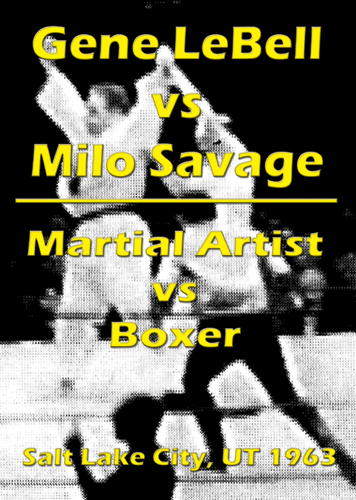
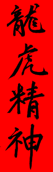
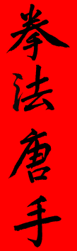
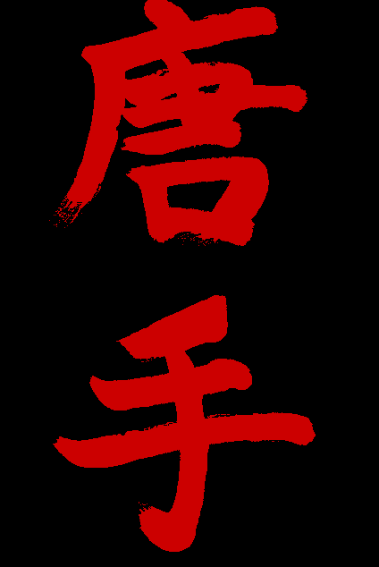
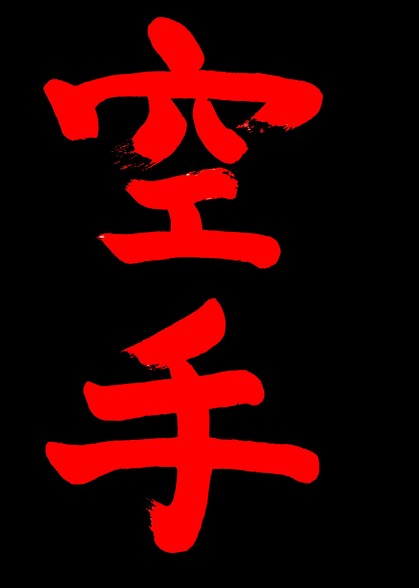

Kenpo Jiu-Jitsu
Creed
“I come to you with only open hands. Other weapons, I have not, but should right or honor require it, my hands will bear me out.”
— 700 year-old Samurai Code of Yoshida
Table of Contents
Kenpo JiuJitsu — The Ultimate in Self-Defense
The Tracy System of Kenpo Jiu-Jitsu IS self-defense—it is not a sport. It is not simply a plaything like the martial arts of too many systems and styles that cannot actually be used in reality when you really need it—when your life is in danger.
Since the beginning of time, unarmed fighting has for most of the Western World been little more than rough and tumble brawling. In the 19th century the Marquise of Queensberry introduced some civility into spectator fighting, and gave rise to professional boxing. But few men, and virtually no women learned how to “Box.” Savate was cultivated as French foot-fighting when, as tradition holds, French sailors observed Chinese “Boxers.” The Boxer Rebellion of 1899-1900, and America’s Gunboat Diplomacy put American servicemen in contact, and often fights, with Oriental forms of unarmed fighting. Jiu-Jitsu (Ju-Jitsu) and Judo became popular when Theodore “Teddy” Roosevelt, the 26th U.S. President, learned Judo giving Jigoro Kano, the founder of Judo, the international acceptance Judo needed. But Judo and Jiu-Jitsu practitioners were few in number. This influence, however, gave rise to the military form of hand-to-hand combat called “Combat Judo.”
Karate first appeared in America in the early 1930’s but it was relatively unknown until American servicemen began returning from the occupied post-war Japan. Then with the advent of the Korean War, hundreds of thousands of soldiers were sent to Japan as support troops. Most of these servicemen learned Karate, because McArthur forbid Judo, but not Karate. But the fighting style of the western world was still a "style without style"—rough and tumble brawling. One need only look at the movies of the early 20th century to see how the western world fought. Fighting in films was a shadowy mirror of how people acted and fought.
Ju-jitsu had developed as a Japanese combat martial art over many centuries of use in actual warfare and gave birth to Judo, which was a much more gentle way. These arts were superb forms of self-defense in Japan. But Judo was virtually useless against a trained Boxer, as many Judo instructors discovered when American Boxers would challenge them. Almost every American who trained in Judo in the ten years after WWII would tell a story of how he had grabbed an attacker by the coat lapel to throw him, only to find himself getting hit as he held a torn, empty coat in his hand.
Japanese Karate was not much better. It was still, linear, and direct. It worked well against the untrained, but Boxers and street fighters found it useless against them. There were many contests between Boxers and Karate men in Japan and Korea after the war. The Karate-ka was allowed to use his hands and feet, without gloves, while the boxer wore gloves and followed boxing rules. Even despite these obvious disparities, the boxer almost always won. When the boxer was allowed to fight without gloves, the match seldom lasted beyond 30 seconds.


Judo versus Boxing matches often produced the same results. However, in those matches, the Boxer was not only required to wear gloves, but also a heavy Judo Gi. “Judo” Gene LeBell is the only person who ever legitimately beat a boxer in such a match in 1963. Gene, however, was an exceptional man, a professional wrestler, an expert martial artist, and it was not to his disadvantage that he was over 6 feet tall and weighed over 220 pounds.
Jiu-Jitsu versus Boxer matches were quite another thing, as the Jiu-Jitsu fighter would simply shoot-in in a low stance, taking the first punch to his back as he grabbed the legs and took the helpless Boxer down to choke him out.
It is little wonder then that the Kenpo Jiu-Jitsu, which Hawaiian-born, Japanese-raised James Mitose of the Yoshida Clan, began teaching shortly after WWII was so effective as a form of self-defense. Even though Mitose’s style of Kenpo had been handed down in his family for over 700 years in Japan, it had originated in China, where “Boxing” and kicking together were accepted forms of fighting. It is the preservation of this art that sets Tracy's Kenpo apart from all other forms of Kenpo.
What is Kenpo Jiu-Jitsu?
Kenpo Jiu-Jitsu is an art created by ancient Samurai Warriors of Japan, to deal with the most severe self-defense situations. It is the only self-defense art taught today that is designed to protect the individual by any and all means necessary. Kenpo, by its powerful philosophy and devastating hand techniques, enables the individual to use enough force necessary to dissuade, disable, injure, or neutralize the assailant.
Many styles and many terms synonymous with martial arts and specifically Kenpo exist today. While the word Karate is a more modern term, with actually two different meanings, Kung Fu and even Kickboxing are also terms used to describe this fascinating method of oriental self-defense. However, all of these styles are considered oriental forms of boxing (striking), whereas Jiu-jitsu, Judo, Aikido, and T’ai-chi ch’uan are oriental methods of wrestling (grappling).
Practitioners of Kenpo Jiu-Jitsu are enthusiastic adherents of combinations of punches, strikes and kicks, blended with throws, holds, takedowns and other compliance techniques. Unlike most systems their training goes beyond the “one block, one punch” theory. Working on combinations of five or more movements, they contemplate probable counters that may thwart their opponent’s efforts. This realistic approach eradicates thoughts of underestimating an opponent’s ability to take punishment or overestimating their own ability. They learn practical and effective movements that can have immediate effect and are not just untried theories on paper. They also learn that combinations can be changed instantly to fit a specific situation and do not necessarily have to follow a set pattern. Chances of panic in a real crisis are considerably lessened because they are taught how to cope with our modern day methods of fighting realistically, logically, systematically and effectively.
Training—Instruction
At Tracy’s Kenpo Studios, all beginners are given instruction in basic stances, blocks, punches, kicks, throws, joint-locks, chokes and takedowns. Everyone enrolled is classified as a novice regardless of previous training; and must therefore spend approximately three months in the beginner class. As the student progresses, they are taught various techniques including defenses against grabs, punches and kicks. They learn the location of vital points on the body and how to use their natural weapons to their maximum.
Greater stamina, concentration and coordination are required of those in the intermediate class. The student is taught to become proficient in designated “forms” resembling a graceful ballet. Within these dance-like movements are various defensive and offensive combinations amalgamated into fluid and continuous sequences. The forms become more complex and contain highly skilled techniques that require greater balance and agility. With detailed training, the student learns to defend himself against a club, knife or gun. Handling three or more attackers then becomes an achievable task.
A student considered competent by their instructor is placed in the advanced class. Again they are taught higher skills along with the theory and philosophy. Now their ability is put to an actual test. They are often asked to spar with fellow students and are required to stop their blows just prior to contact. Precision, economy of motion and accuracy become a normal and integral part of their reflexes. Thus a serious student discovers that the perfection of Kenpo can be a lifetime endeavor.
Theory—Philosophy
One cannot realize the deadliness, speed and incredible power of Kenpo Jiu-Jitsu without witnessing an actual demonstration. Utilizing principles of physics and leverage, the Kenpo practitioner is able to strike a penetrating blow to a small vital target with whip-like speed. After learning to return a blow at a greater speed than delivered it is improbable that an adversary could grab the striking hand or foot. By learning combinations, the Kenpo student makes it extremely difficult for an opponent to block all of their blows. Using correct breath control, all of the person’s strength is released at the moment of impact. An expert in Kenpo Jiu-Jitsu can easily split a stack of one-inch boards with the bare knuckles or shatter solid bricks with the “knife-edge” of their hand.
However, the Kenpo practitioner is basically passive. The true philosophy of Kenpo is embodied in its creed. Because of their accomplishments, the standards by which they live dictates that the student of Kenpo does not seek trouble; nevertheless, they expect it and are prepared. By exercising control a person proficient in Kenpo Karate need not permanently injure an aggressor, but merely render them incapable of attack. With confidence in their abilities, fear is banished and trouble avoided. The ultimate goal of the Kenpo practitioner is one of humility and restraint.
Grading—The Belt System
Conscientious students inevitably qualify for promotion and are judged according to specific Kenpo criteria. In time, one’s performance and ability will correspond to one of several proficiency levels maintained by the school. These levels are distinguished by a graded belt system. Advancement is dependant upon the student’s own efforts. Many factors are considered for advancement, including an analysis of the prospect’s character.
The color of the belts consists of white (for beginners), brown (more advanced) and black (highly skilled). There are varying degrees within each category; for example the yellow, orange, purple, blue and green belts are representative of the degrees, or “Kyu” (steps) of white.
Belts awarded by other schools are not honored, as the requirements and curriculum vary greatly from each style and system to another, so there is no comparison possible.
What does "Kenpo" mean?
Of all the major Martial Arts styles, Kenpo's origin and history are the least understood and the most confusing.
Kenpo is a mixture of five cultures: First and most important, Chinese; second Japanese; followed by Okinawan, Hawaiian (before Hawaii became a state) and American.
The greatest confusion regarding "Kenpo" is the origin and the meaning of it's name. Despite its birth in China, the art we call "Kenpo" was passed down through the Mitose family, who studied the original art in China in the 1600's and brought it back to Japan.
Since the Mitose family was Japanese, they naturally used the Japanese language rather than Chinese to describe their family system, which they later named "Kosho-ryu Kenpo Jiu-Jitsu" (Old Pine Tree Style): "Ko" (old) "Sho" (pine tree) "Ryu" (school/style).
Modern day usage of the terms "Kung-fu" (Chinese Mandarin dialect) or "Gung-fu" (Chinese Cantonese dialect), "Wu Shu" (Military/War Art) and "Kuo-shu" (National Art) to describe the Chinese martial arts has added more confusion. Each of the above names in general describes the same martial art.
"Kung-fu" (or "Gung-fu") means disciplined technique, skill, time (that is, a period of time used by a person to do a specific type of work), ability or strength—and is a generic term for exercise. "Kung-fu" is the term used outside of mainland China (most notably the United States) to describe any of the Chinese martial arts. The original or more proper term is "ch'uan fa" (fist law) or "ch'uan shu" (fist art).


One characteristic common to the Oriental languages is their use of the same written characters; however, the way the written characters are pronounced make the spoken languages completely different from one country to another, or even from one part of the country to another. China is a classic example, with two major dialects: Mandarin (the official dialect) and Cantonese, plus hundreds of local dialects. It was this type of diversification which led to the development of so many different martial arts styles in China. There are over 300 styles of "Kung-fu" taught in China today.
Originally the martial arts in China were referred to as "Ch'uan-fa" meaning "fist law". The Japanese pronounce these same written characters "Kenpo" - or "Kempo". In modern usage, "Kenpo" spelled with an "N" indicates the original Chinese origin; when spelled with an "M" it indicates its incorporation into the Japanese culture.
It was James M. Mitose, whose family moved from Japan to Hawaii, who established the spelling of "KeNpo" with an "N" in the art we teach and call "Kenpo". The original art as taught by Mitose in Hawaii, which is the first record of teaching outside their family lineage, was called more simply "Kenpo Jiu-jitsu." He wrote a book in 1953 entitled: What is Self Defense? (Kenpo Jiu Jitsu).
Is it Kenpo "Karate" or Kenpo Jiu-Jitsu?
Kenpo has been described many ways, but the term "Kenpo Karate", using original Chinese characters, is the most common, authentic and clear description of our style used today, when written in Kanji—also distinguishing it as completely different from the Japanese and Okinawan written characters (Kanji) for Karate which define Karate as "empty hand(s)". This is the "Karate" most people think of if you say the word Karate in English. There is no confusion if you are Japanese or Chinese and you are reading the words Karate in their two completely different forms of Kanji.

The confusion lies in the fact that the actual word "karate" is a "homonym": a word with the same pronunciation as another but with a different meaning, origin, and, usually, spelling. When written in its original form of 唐手, (the one we use) it means "China Hands" or "T'ang Hands" (pronounced "tong"—remember "Tang" is a breakfast drink) referring to the "T'ang Dynasty" (618-960 A.D.) or—more literally—China. This again distinguishes it as a completely different art from "Karate" meaning "empty hands".

The second meaning—the one used by the Japanese and Okinawans, and the one which causes the most confusion because it is the one most commonly referred to in America—is 空手, "Karate": "Kara" (empty) "Te" (hand). In 1923 the Okinawan Masters changed the Chinese character from T'ang (China) to the Japanese (Kanji) for "empty" because the martial arts now taught in Okinawa were no longer purely Chinese in nature—over the years they had been combined with the original "Okinawa Te", or "Bushi No Te" ("Warrior's hand(s)") to form a new style. This became the father of all modern Okinawan and Japanese Karate, reflecting the changes they had made.
Although the term "Karate" usually denotes a Japanese/Okinawan style, there was no Karate in Japan until 1923, so by any standards Japan's Karate is a relativley modern martial art. The Kenpo Karate we teach, on the other hand, reflects the original Chinese martial arts passed down from one generation to another for hundreds of years—a tradition our schools continue to this day.